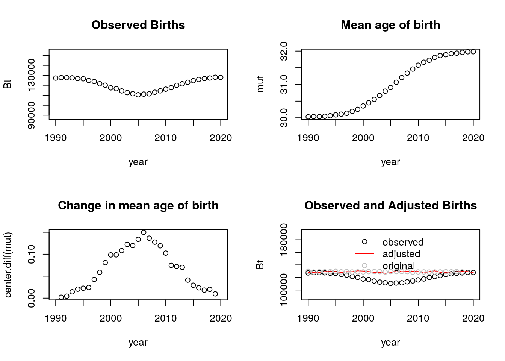
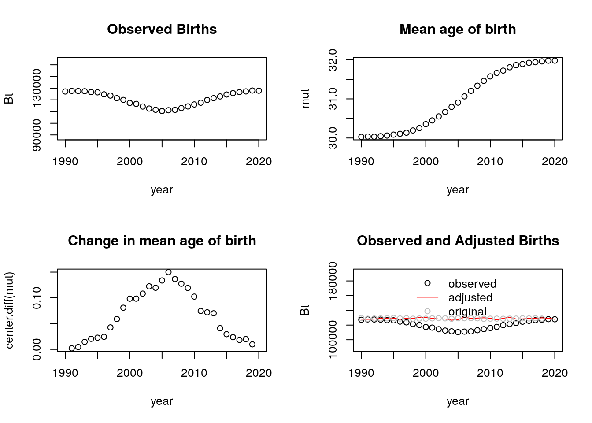
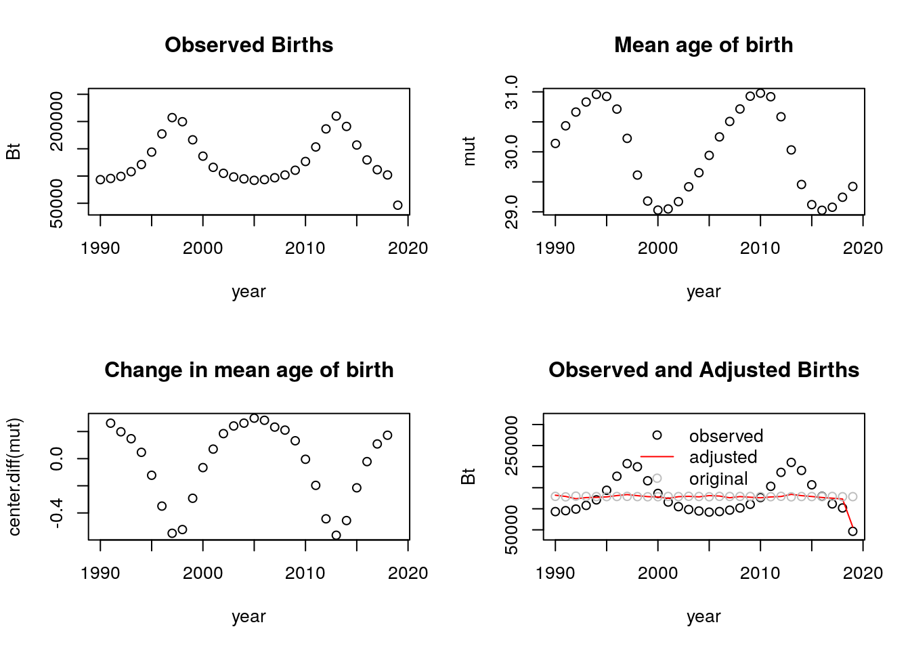
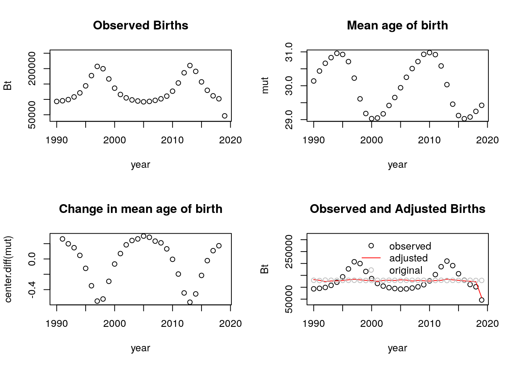
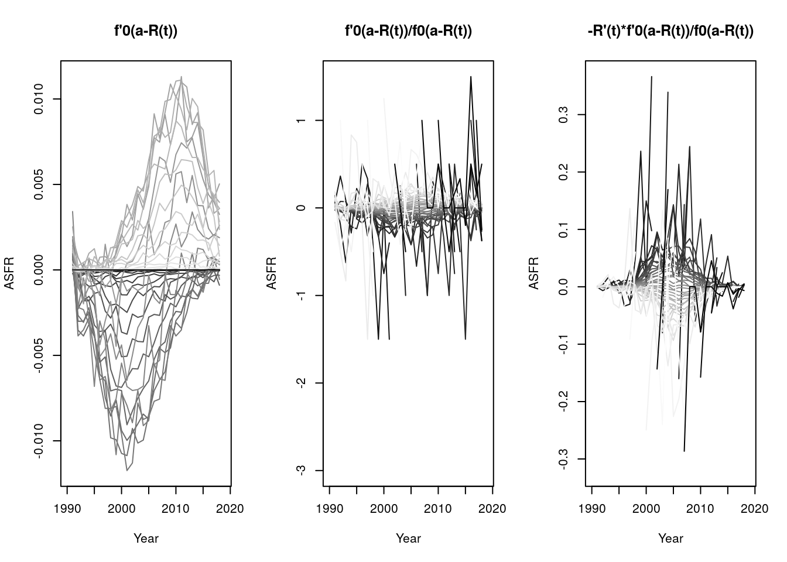
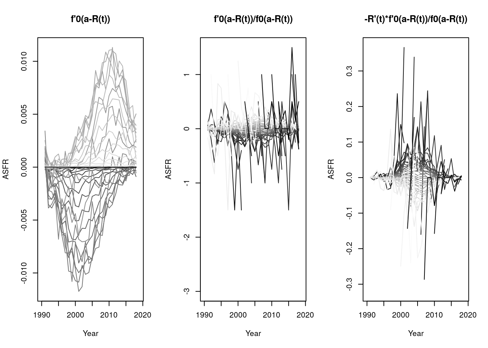
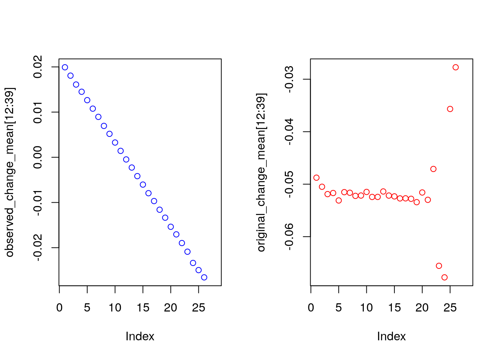
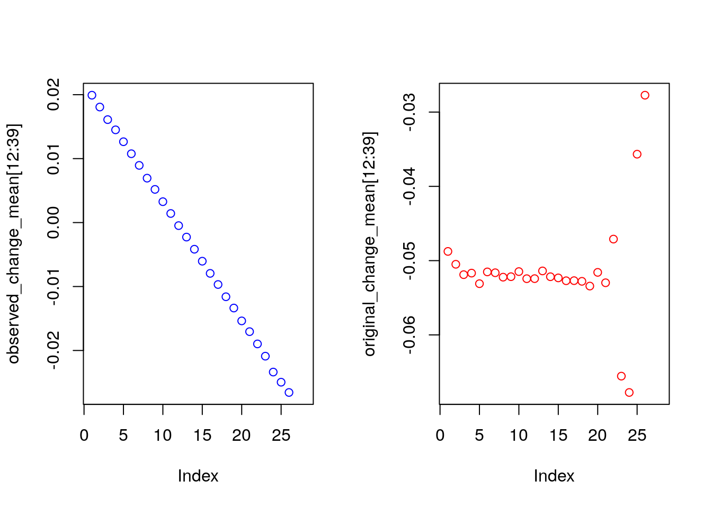
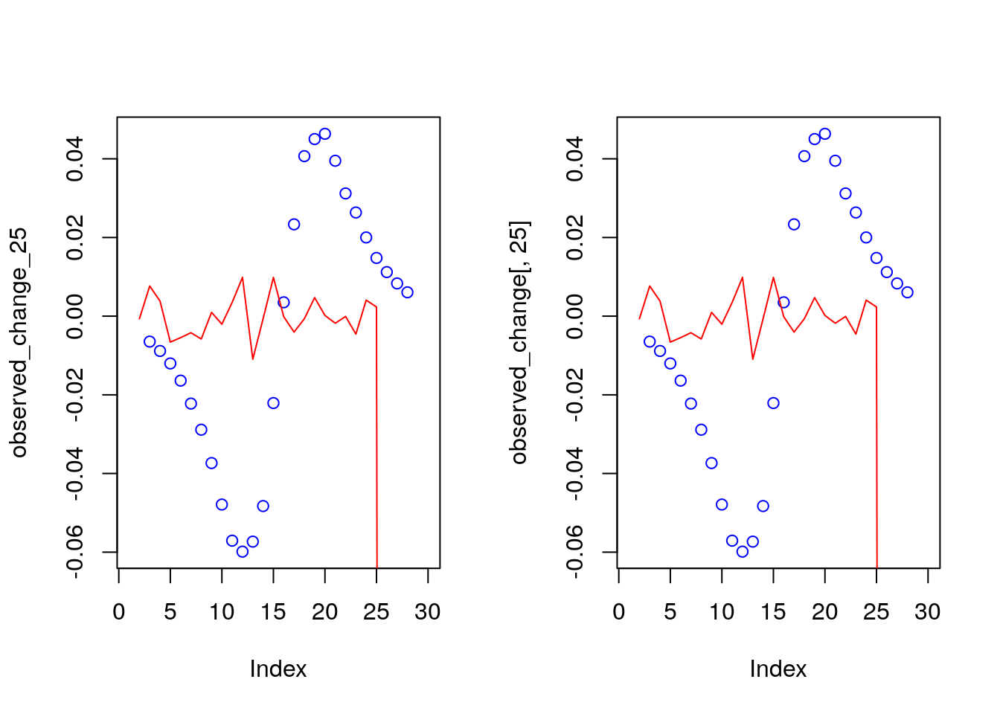

Chapter 7 Fertility Heterogeneity: Tempo Distortions and Distorted Tempo
7.1 Outline
- Introduction and a tempo simulation
- Bongaarts and Feeney’s formula
- An application to the United States
- Two Americas?
- EM algorithm for unmixing mixtures
- An application to two Americas.
Additional resources:
- Sullivan (2005): An early paper (by a Berkeley Demog student!) focusing on first birth hazards.
- Burkimsher (2017): A descriptive paper, which you can mostly skip. But see especially section 7, where she argues that her findings contradict Sullivan for the United States.
- Hastie, Tibshirani, and Friedman (2009): A textbook example of expectation-maximization algorithm applied to mixture of two normals in Section 8.5.
- Victor Lavrenko. Youtube video : “EM algorithm: how it works” https://www.youtube.com/watch?v=REypj2sy_5U.
- Bongaarts and Feeney (1998)
7.2 Introduction
What we see is superficial. Heterogeneous models reveal what’s “really” going on. (Or do they?).
- Until the past sections, population hazards mislead.
- However in this section, homogeneous fertility misleads.
We now reverse perspectives:
- We see differences we see in genotypes, in lineages, in names.
- These could be due to “real” differences (heterogeneity).
- But they could also be due to luck: everyone is the same but stochastic outcomes differ.
- Our models of individual-level randomness will have predicted dynamics, which are themselves interesting but can also be used as a “null” to compare to observations.
7.2.1 Fertility postponement, a very simple example
Baseline
- A population has a history of 1 birth per day
- When women turn age 25, they have a daughter.
- This gives us a constant stream of births, 365 per year.
Postponement
- Starting on Jan. 1, 2020, everyone postpones childbearing an additional month, until they are aged 25 1/12.
- How many births will there be in 2020?
- How many births in 2021?
As everybody postpones childbearing for a month, then the first birth of 2020 occurs on February 1st so that 31 babies have not been born by then.
This means that during 2020 there are \(365-31=334\) births. For this year, births and total fertility rate decrease. However, the postponement doesn’t affect the birth stream in 2021 as there will still be one birth per day, even if in the absence of postponing these some of the births should’ve occured in 2020.
7.2.2 Continuous postponement, a shiny simulation
To answer these questions, we can use the following shiny app.
\(R(t)\) Cumulative postponment
\(r(t)\) Incremental postponement \(r(t) = R'(t)\)
What is a formula for recovering original birth stream? \[\begin{align} \hat{B}_{orig} &= B_{obs} \times (1 + R'(t)) \\ \text{or}\\ \hat{B}_{orig} &= B_{obs} \times 1/ \left[1 - R'(t)\right]? \end{align}\]
Note: this idea of ``recovering original’’ is one way to think about tempo adjustment.
We can think of the original version as that which should have ocurred in the absence of postponement. Intuitively, it should be higher than the observed birth stream, but how much larger? The table below shows an example of how to recover the original births where each formula refers to the equations above.
| r(t) | B(obs) | B(orig) formula 1 | B(orig) formula 2 |
|---|---|---|---|
| 0.1 | 91 | 100.1 | 101.1111 |
| 0.2 | 84 | 100.8 | 105.0000 |
| 0.3 | 77 | 100.1 | 110.0000 |
| 0.4 | 72 | 100.8 | 120.0000 |
The correct formula is equation 2. NOTE: is this correct? If so, why?
7.3 Period Shifts: Bongaarts and Feeney’s model
In a bigger microsimulation
- Each period will have births across a range of ages
- We’ll randomly generate the original planned birthdays
- Then we’ll shift by a continuous function \(R(t)\).
The birth rate of women, \(f(a,t)\), aged \(a\) in period \(t\) is: \[ f(a,t) = f_0(a - R(t)) (1- R'(t)) q(t) \]
Where
- \(f_0\): constant baseline schedule (can be normalized to sum to 1).
- \(q(t)\): period intensity parameter: “quantum”
- \(R(t)\): cumulative shift.
An example
\[ f(a,t) = f_0(a - R(t)) (1- R'(t)) q(t) \]
- \(R_{2019} = 3\)
- \(R'_{2019} = 0.1\)
- \(q(2019) = 1\)
Give an expression for \(f(28,2019)\)
\[ \begin{aligned} f(28,2019) &= f_{0}(28-3)\times(1-0.1)\times(1) \\ & = (0.9)f_{0}(25) \end{aligned}\]
Therefore, the fertility rate for a 28 year-old in 2019 would be 0.9 of the baseline fertility rate at age 25. Another way of thinking about it is that had there been no postponement, the fertility rate that we are observing in 2019 for this 28 year-old would actually be similar to that of a 25 year old.
Small changes in the stock can have huge effect in the flows.
7.3.1 A derivation: due to Rodriguez NOTE: not sure what the reference is here
Assume no quantum effects (i.e, no \(q(t)\)). Take a cohort with cumulative fertility
\[ F_0(a) = \int_0^a f(x) \,dx \]
Now put in shifts so that observed fertility is from an age \(R(t)\) years earlier. (“28” is the new “25”!) \[ F(a,t) = F_0(a - R(t)) = F_0(a - R(c + a)) \]
Differentiate with respect to age (which for a cohort is also time \(t\)), using chain rule
\[ \begin{aligned} \frac{d }{dt}F(a,t)= f(a,t) &= F'_{0}(a-R(c+a))\times(1-R'(c+a)) \\ &= f_0(a - R(t)) \left[1 - R'(t)\right] \end{aligned}\]
Let’s re-notate our constant quantum result \[ f_0(a,t | R(t) ) = f_0(a - R(t)) \left[1 - R'(t)\right] \] Then we can incorporate period quantum on the shifted surface: \[ f(a,t) = f_0(a,t | R(t) ) q(t) = f_0(a - R(t)) \left[1 - R'(t)\right]q(t) \]
Note: If we vary quantum before shifts, then \(q(t)\) will bleed into neighboring years. (a small effect, but makes model messier). NOTE: I don’t understand this, could you explain Josh?
7.3.2 Tempo-adjusted TFR:
counter-factual
TFR in absence of timing changes
\[ TFR(t) = \int_0^\infty f(a,t) \, da \]
Substituting our shifted birth rates with quantum \[ \begin{aligned} TFR(t) &= \int_0^\infty f_0(a - R(t)) \left[1 - R'(t)\right]q(t) da \\ &=\left[1 - R'(t)\right]q(t) \int_0^\infty f_0(a - R(t)) da \\ &= TFR_0 \left[1 - R'(t)\right] q(t)\\ \end{aligned} \] Without loss of generality, define \(TFR_0 = 1\), then
\[ q(t) = \frac{TFR(t)} {1 - R'(t)} \equiv TFR^*(t) \] The observed \(TFR(t)\) deflated by the rate of change (\(1 - R'(t)\)) is the BF formula.
How do period schedules change?
\[ f(a,t) = f_0(a - R(t)) \left[1 - R'(t)\right]q(t) \]
What is \({\partial \over \partial t} \log f(a,t)\)?
Solving
\[ \begin{aligned} {\partial \over \partial t} \log f(a,t) & = \frac{d}{dt}log(f_{0}(a-R(t))) + \frac{d}{dt}log(1-R'(t)) + \frac{d}{dt}log(q(t)) \\ & = \frac{-f'_{0}(a-R(t)) R'(t)}{f_{0}(a-R(t))} - \frac{R''(t)}{1-R'(t)}+ \frac{q'(t)}{q(t)} \end{aligned} \]
If we sketch this, where the age is on the x-axis, then the last two components affect the intercept of the curve. If births are postponed, \(R'(t)>0\) but if they are actually advanced then \(R'(t)<0\), which affects the slope, \(\frac{\partial}{\partial t}\log f(a,t)\).
Uniform shifts
- BF model assumes all ages shift by \(R(t)\).
- BF model assumes all ages rise or fall by same quantum \(q(t)\)
- Violating these assumptions means change in mean age will not just reflect “tempo”.
- Example: What happens if people have fewer higher order births?
BF recommendation for achieving uniformity
Separate estimates for each birth order, and then combine: \[ TFR^*(t) = \sum_i TFR_i^*(t) = \sum_i {TFR_i(t) \over 1 - r_i(t)} \]
This will protect against order-specific quantum effects.
7.4 An Application to the United States
Tempo adjustment of US fertility using HFD data using Bongaarts-Feeney formula:
1. Read in data and format into an array.
Below we show the period fertility rates for all parities at each age for 1933 and 1934 of US women.
library(data.table)
library(dplyr)
library(knitr)
source("https://raw.githubusercontent.com/josh-goldstein-git/random_demography/master/bookdown-master/codes/tempo_functions.R")
source("https://raw.githubusercontent.com/josh-goldstein-git/random_demography/master/bookdown-master/codes/utility_functions.R")
## age specific fertility rates by birth order for all countries and times
## RR means "rectangles" on Lexis surface
dt <- fread("https://raw.githubusercontent.com/josh-goldstein-git/random_demography/master/bookdown-master/data/zip_w/asfrRRbo.txt", showProgress = FALSE)
dt <- dt[Code == "USA"] ## keep only US
dt <- dt[Age %in% 15:49] ## keep only ages 15 to 49
## put all order fertility into a matrix
fat <- dt[, xtabs(ASFR ~ Age + Year)] # age (rows) by cohort year (column) matrix of ASFR
fat <- as.matrix(unclass(fat))
fat1 <- dt[, xtabs(ASFR1 ~ Age + Year)] #age specific fertility rates for parity = 1
fat2 <- dt[, xtabs(ASFR2 ~ Age + Year)]
fat3 <- dt[, xtabs(ASFR3 ~ Age + Year)]
fat4 <- dt[, xtabs(ASFR4 ~ Age + Year)]
fat5p <- dt[, xtabs(ASFR5p ~ Age + Year)]
year.vec <- colnames(fat)
age.vec <- rownames(fat)
parity.vec <- c("all", 1:5)
fat.array <- array(NA, dim = c(nrow(fat), ncol(fat), length(parity.vec)))
dimnames(fat.array) <- list(age.vec, year.vec, parity.vec)
fat.array[,,"all"] <- fat
fat.array[,,"1"] <- fat1
fat.array[,,"2"] <- fat2
fat.array[,,"3"] <- fat3
fat.array[,,"4"] <- fat4
fat.array[,,"5"] <- fat5p
kable(fat.array[,1:2,"all"], caption="An extract of period age-specific fertility rates") | 1933 | 1934 | |
|---|---|---|
| 15 | 0.00672 | 0.00715 |
| 16 | 0.01875 | 0.01991 |
| 17 | 0.03846 | 0.04062 |
| 18 | 0.06586 | 0.06957 |
| 19 | 0.08719 | 0.09155 |
| 20 | 0.10136 | 0.10749 |
| 21 | 0.10639 | 0.11296 |
| 22 | 0.11349 | 0.11807 |
| 23 | 0.11785 | 0.12034 |
| 24 | 0.11476 | 0.12208 |
| 25 | 0.11388 | 0.11536 |
| 26 | 0.10873 | 0.11399 |
| 27 | 0.10118 | 0.10487 |
| 28 | 0.10283 | 0.10554 |
| 29 | 0.09094 | 0.09483 |
| 30 | 0.09009 | 0.09330 |
| 31 | 0.06941 | 0.07239 |
| 32 | 0.07813 | 0.07541 |
| 33 | 0.07614 | 0.06993 |
| 34 | 0.06013 | 0.07248 |
| 35 | 0.06009 | 0.05676 |
| 36 | 0.05416 | 0.05401 |
| 37 | 0.04748 | 0.04670 |
| 38 | 0.04755 | 0.04769 |
| 39 | 0.03724 | 0.03752 |
| 40 | 0.03078 | 0.03024 |
| 41 | 0.01967 | 0.01963 |
| 42 | 0.01877 | 0.01874 |
| 43 | 0.01283 | 0.01235 |
| 44 | 0.00808 | 0.00789 |
| 45 | 0.00526 | 0.00491 |
| 46 | 0.00245 | 0.00242 |
| 47 | 0.00127 | 0.00122 |
| 48 | 0.00081 | 0.00087 |
| 49 | 0.00037 | 0.00037 |
2. Fit bongaarts feeney without birth order
tfr.vec <- colSums(fat) # total fertility rate for each cohort
mu.vec <- apply(fat, 2, get.mean) # mean age at childbearing
rt.vec <- center.diff(mu.vec) # increments of postponement
adj.tfr.vec <- tfr.vec / (1 - rt.vec) # Assuming no quantum effect, tempo-adjusted TFRpar(mfrow = c(3,1))
plot(names(mu.vec), mu.vec, xlab = "Year", ylab="Mean age of childbearing")
plot(names(mu.vec), rt.vec, xlab = "Year", ylab= "Shifts")
abline(h =0)
plot(year.vec, tfr.vec, type = "l", xlab = "Year", ylab= "TFR")
lines(year.vec, adj.tfr.vec, lty = 2)
abline(v = c(1945, 2008))
legend("topright", c("Observed TFR", "Tempo-adjusted TFR"), lty= c(1,2))Figure 7.1: Adjusted TFR
- We see fertility since 1980 has been depressed by postponment
- We see weird dynamics around end of WW2 and great recession.
- What’s going on? Here is a closeup

Figure 7.2: Observed and tempo-adjusted TFRs
- Now let’s look at turbulence around WWII

Figure 7.3: Change in fertility rates around WWII
- From 1945 to 1946, fertility goes up a lot, but more at younger ages. So mean goes down. BF adjustment over-compensates, and has quantum declining.
What’s happening from 1944-45?
3. Fit bongaarts feeney with birth order
out <- bf.fit(fat.array) #function to obtain BF tempo-adjusted TFR
adj.tfr.bo.vec <- out$tfr.star.out[, "bf.tfr.star"] # sum of parity specific tempo-adjusted TFRs
Figure 7.4: TFR by parities
4. Use HFD data to verify adjusted TFR.
HFD uses a tempo-adjusted TFR that is the sum of the parity specific adjusted BF TFR.
## let's check against hfd
hfd.adj.dt <- fread("https://raw.githubusercontent.com/josh-goldstein-git/random_demography/master/bookdown-master/data/zip_w/adjtfrRR.txt", showProgress = FALSE, skip = 2)
hfd.adj.dt <- hfd.adj.dt[Code == "USA"]We find that:
- Taking birth order into account smooths out WW2 turbulence (large fluctuations) but increases the variation during the Great Recession.
- The baby boom appears to initially be even greater than observed when we take into account birth order, but then it fall more than observed.
- Finally, the baby bust was not as bad as it seemed.

Figure 7.5: TFR by parities using HFD data
7.4.1 Conclusions
- Baby boom smaller if we account for “pre-ponement”.
- Fertility lull in 1970s and 80s disappears if we account for “postponement”.
- Birth order disaggregation improves estimates of shifts from changes in mean age
- What happened with the recession?
7.5 Two Americas
Let’s look at births (all orders). Here we have some animations of the ASFR over time.
my.year.vec <- 1975:2017
# library(devtools)
# install_github("dgrtwo/gganimate")
# install.packages("transformr")
# install.packages("animation")
library(gganimate)
library(data.table)
library(mixtools)
library(ggplot2)
source("https://raw.githubusercontent.com/josh-goldstein-git/random_demography/master/bookdown-master/codes/tempo_mixed_functions.R")
source("https://raw.githubusercontent.com/josh-goldstein-git/random_demography/master/bookdown-master/codes/tempo_functions.R")
# plot1 <- ggplot(data=dt[Year %in% my.year.vec,2:4], aes(x=Age, y= ASFR)) +
# geom_line(aes(group=Year))+
# transition_time(Year)+
# labs(title = "Year: {frame_time}")
# anim_save("plot1.gif", plot1)
During the earlier years, the mean childbearing age seems to be in the early 20s. However with time, the AFR seems to become bimodal. So what is happening here? Are there two underlying groups of women that experience different fertility rates. Now fit mixing model and redo the animation.
NOTE: Not sure of all the lines in this mixture code. Josh, could you add some notes please?
## takes few minutes to run
my.fat <- fat[, paste(my.year.vec)]
out <- get.mixed.tfr.star(my.fat)
##
out.all <- out
#Mixture simulation
if (0) {
mu.mat <- get.coefs.mixed(out.all$fert.fit.list.variable.sigma)$mu.mat
lambda.mat <- get.coefs.mixed(out.all$fert.fit.list.variable.sigma)$lambda.mat
sigma.mat <- get.coefs.mixed(out.all$fert.fit.list.variable.sigma)$sigma.mat
}
mu.mat <- get.coefs.mixed(out.all$fert.fit.list)$mu.mat
lambda.mat <- get.coefs.mixed(out.all$fert.fit.list)$lambda.mat
sigma.mat <- get.coefs.mixed(out.all$fert.fit.list)$sigma.ma
#Temporary comment out until we figure out what these graphs actually are
# matplot(my.year.vec, t(mu.mat))
# abline(v = 2015)## problem here
# points(c(2015, 2015), c(21.5, 30.3))
#
# matplot(my.year.vec, t(lambda.mat))
# abline(v = 2015)## problem here
# points(c(2015, 2015), c(21.5, 30.3))
## interpolate 1915
colnames(lambda.mat) <- my.year.vec
colnames(mu.mat) <- my.year.vec
lambda.mat[,"2015"] <- (lambda.mat[,"2014"] + lambda.mat[,"2016"])/2
mu.mat[,"2015"] <- (mu.mat[,"2014"] + mu.mat[,"2016"])/2Now we create the animation with the normal distributions inside as well as the observed ASFR.
# Obtaining different ASFRs per group (1 and 2)
my.dt <- dt[Year %in% my.year.vec,]
for (i in 1:length(my.year.vec)){
my.year <- my.year.vec[i]
year.vec <- colnames(my.fat)
fx <- my.fat[,paste(my.year)]
# fx <- fx/sum(fx)
x <- as.numeric(names(fx))
## par(mfrow = c(1,1))
# plot(x, fx,
# ylim = c(0, .3),
# ylab = "normalized fx")
s <- year.vec == my.year
this.tfr <- sum(fx)
fx1.hat <- dnorm(x, mean = mu.mat[1,s], sd = sigma.mat[1,s]) *
lambda.mat[1,s]* this.tfr
# lines(x, fx1.hat, col = "red")
fx2.hat <- dnorm(x, mean = mu.mat[2,s], sd = sigma.mat[2,s]) *
lambda.mat[2,s] * this.tfr
# lines(x, fx2.hat, col = "blue")
# lines(x, fx1.hat + fx2.hat)
# title(last.year)
my.dt <- my.dt[Year==my.year, fx := fx]
my.dt <- my.dt[Year==my.year, fx1 := fx1.hat]
my.dt <- my.dt[Year==my.year, fx2 := fx2.hat]
my.dt <- my.dt[Year==my.year, fx1fx2 := fx1.hat + fx2.hat]
}
labels <- c("Observed" = "black", "Mixture 1" = "blue", "Mixture 2" = "red", "Sum of mixtures"="orange")
# plot2 <-
# ggplot(data=my.dt, aes(x=Age)) +
# geom_line(aes( y= ASFR, group=Year, color = "Observed"))+
# geom_line(aes( y= fx1, group=Year, color = "Mixture 1"))+
# geom_line(aes( y= fx2, group=Year, color = "Mixture 2"))+
# geom_line(aes( y= fx1fx2, group=Year, color = "Sum of mixtures"))+
# labs(color = "Legend") +
# scale_color_manual(values = labels)+
# theme_bw()#+
# transition_time(Year)+
# labs(title = "Year: {frame_time}")
# anim_save("plot2.gif", plot2)
The animation shows how the distributions operate under the ASFR curve. There could be two separate normal distributions with distinct mean ages of childbearing.
Let’s do tempo adjustment:
NOTE: Help! I don’t know how to interpret these graphs
rt.mat <- t(apply(mu.mat, 1, center.diff))
tfr.vec <- apply(my.fat, 2, sum)
tfr.mat <- lambda.mat * tfr.vec
par(mfrow = c(1,2))
matplot(my.year.vec, t(tfr.mat), ylim = c(0, 3))
tfr.star.mat <- tfr.mat / (1 - rt.mat)
matplot(my.year.vec, t(tfr.star.mat), ylim = c(0,3))
Figure 7.6: Tempo Adjustment
tfr.star.vec <- colSums(tfr.star.mat)
par(mfrow = c(1,1))
plot(my.year.vec, tfr.vec, type = "l",
ylim = c(1, 3))
lines(my.year.vec, tfr.star.vec, lty = 2)Figure 7.7: Tempo Adjustment
7.5.1 Mixture
Let’s look at 1st births, again as if their are two latent groups: \(A\) and \(B\). (These could be “early moms” / “late moms”, non-college / college, pre-marital / marital, lower-class / upper class, \(\ldots\))
library(mixtools)
## simulate 2 normals
N <- 1000
x1 <- rnorm(N, mean = 22, sd = 3) ##
x2 <- rnorm(2*N, mean = 30, sd = 4)
## combine them
x <- c(x1,x2)
## use EM to infer mixture
out <- normalmixEM(x,
lambda = c(.5, .5),
mu = c(15, 35),
sigma = c(5,5))## number of iterations= 284## [1] 21.82989 29.86819## [1] 2.809958 4.145025## [1] 0.3024403 0.6975597Seems to work great.
ages <- 10:49
dens1 <- dnorm(x = ages, mean = out$mu[1], sd = out$sigma[1]) * out$lambda[1]
dens2 <- dnorm(x = ages, mean = out$mu[2], sd = out$sigma[2]) * out$lambda[2]
par(mfrow = c(1,1))
hist(x, probability = T, col = "grey", main = "", xlab="Ages")
lines(ages, dens1, col = "red", lwd = 2)
lines(ages, dens2, col = "blue", lwd = 2)
lines(ages, dens1 + dens2, col = "black", lwd = 2)
Figure 7.8: Histogram of ages (x)
7.5.2 An algorithm for tempo adjustment of mixtures
Fit normal mixture to each year.
Refit using constant variance (average). This assures shape invariance of each component, fulfilling BF assumption.
Estimate BF separately for \(A\) and \(B\), and combine.
tempo_mixed_results_figure.pdf NOTE: not sure about this…
7.6 Conclusions
- Postponement dilutes period births, lowers TFR
- Tempo-adjustment tries to ``put births back in’’
- Changes in mean work fine if ``shape’’ doesn’t change
- Shape can change through heterogeneity
- With strong assumptions, we can identify heterogeneity
- Declining quantum for young and postponement for old appears to be the story
7.6.1 Caveats
- Who are these latent groups? Do you start out in one and end up in the other? Do you stay in one your whole life?
- How do we project forward?
- Can we use other indicators (e.g., social class, education, marriage) to get same results?
7.7 Questions
- Using the tempo_simu.R file,
- Try with N of 4 million – does it still work? What happens?
- Try with a shift function that goes up and down. Are the adjusted counts ever LESS than the observed counts? If so, when?
- If the cumulative shift was Rt = a + 0.1*t, what would be a formula for tempo-adjusted counts of births? Sketch the 4 panels without the computer and then check to see if you’re right.
- Calculate the age profile of fertility change predicted by the BongaartsFeeney model by taking time derivatives of the log schedules. You will end up with three terms. Describe each of these in words.
- Use simulation based on tempo simu.R to check your answer.
- Is there a diagnostic plot that you could do to compare observed agespecific changes to those predicted by the BF model? Hint: use normalized schedules that sum to 1.0
- Use this diagnostic plot to all-order fertility change during the Great Recession.
- Use this diagnostic plot to 1st, 2nd, and 3rd births.
- Fit the two-part normal mixture model to fertility from another country based on what looks interesting in the Burkimsher paper. (E.g., Canada, Portugal, or the Netherlands). I recommend doing this for 1 year, but once you get your code running, you could iterate over years. Use graphs to discuss the goodness of fit. And if you do more than 1 year, discuss whether the time trends in the parameters make substantive sense)
7.8 Solutions
Using the tempo_simu.R file,
- Try with N of 4 million – does it still work? What happens?
This simulation will first sample from a normal distribution draws of ages that represent the ages of women when giving birth for the first time. It also creates as shift function \(R(t)\) which affects all women of a given year.
 
Yes, it still works. In fact, we see that the adjusted births are very close to the observed births when using this number of simulations. (I continue to use an N of 4 million for the rest of this problem).

Yes, it still works. In fact, we see that the adjusted births are very close to the observed births when using this number of simulations. (I continue to use an N of 4 million for the rest of this problem).
- Try with a shift function that goes up and down. Are the adjusted counts ever LESS than the observed counts? If so, when?
 
The adjusted counts are not always less than the observed. Naturally, this only happens when we have spikes on the observed counts that become smoother after the adjusting of the birth counts.

The adjusted counts are not always less than the observed. Naturally, this only happens when we have spikes on the observed counts that become smoother after the adjusting of the birth counts.
- If the cumulative shift was \(R_t = a + 0.1\times t\), what would be a formula for tempo-adjusted counts of births? Sketch the 4 panels without the computer and then check to see if you’re right.
Let \(a = -199\), so we get a shift of 0 to about 3 years depending on the time period:


- Try with N of 4 million – does it still work? What happens?
This simulation will first sample from a normal distribution draws of ages that represent the ages of women when giving birth for the first time. It also creates as shift function \(R(t)\) which affects all women of a given year.
Calculate the age profile of fertility change predicted by the BongaartsFeeney model by taking time derivatives of the log schedules. You will end up with three terms. Describe each of these in words.
\[\begin{aligned} f(a,t)&=f_0(a-R(t))[1-R'(t)]q(t)\\ log(f(a,t))&=log(f_0(a-R(t))) + log(1-R'(t)) + log(q(t))\\ \frac{\partial log(f(a,t))}{\partial t}&=\frac{\partial log(f_0(a-R(t)))}{\partial t} + \frac{\partial log(1-R'(t))}{\partial t} + \frac{\partial log(q(t))}{\partial t}\\ \frac{\partial log(f(a,t))}{\partial t}&=-R'(t)\frac{f_0'(a-R(t))}{f_0(a-R(t))} -\frac{R''(t)}{1-R'(t)} + \frac{q'(t)}{q(t)} \end{aligned}\] The first term represents the proportional change in the fertility of the equivalent pre-postponement cohort. In particular, it is divided into (how far someone shifts ‘over’ relative to ages on the baseline fertility schedule) and an \(R'(t)\) term (how much one shifts ‘up’). The second term represents the proportional change in the rate of change in years of postponement; it is a tempo-effect. The third term represents the proportional change in quantum.Use simulation based on tempo simu.R to check your answer.
The
tempo_simu.Rfunction computes \(R(t)\) but we need to obtain the remaining components of the answer from the previous excercise. For simplicity, let’s assume that there are no tempo effects (\(q(t)=0\)) and that \(a=25\), that is, our baseline schedule is that of women aged 25.- \(R(t)\) components:
Let’s briefly look at \(R(t)\), \(R'(t)\), and \(R''(t)\). In
tempo_simu.R\(R(t)\) refers to the cumulative shift object (shift.t). We can obtain the derivatives by taking the centered difference of this object.
shift.t.prime <- center.diff(shift.t) shift.t.prime.2 <- center.diff(shift.t.prime) par(mfrow = c(2,2)) plot(1991:2020, shift.t, main = 'R(t)', xlab = '', ylab = '') plot(1991:2020, shift.t.prime, main = 'R\'(t)', xlab = '', ylab = '') plot(1991:2020, shift.t.prime.2, main = 'R\'\'(t)', xlab = '', ylab = '') plot(1991:2020,-shift.t.prime.2/ (1-shift.t.prime), main = '-R\'\'(t) / (1- R\'(t))', xlab = 'year', ylab = '')
- \(f_0(a-R(t))\) function: In the Bongaarts and Feeney model, the baseline schedule of women of age \(a\) at time \(t\) is \(f_0(a-R(t))\). That is, it is the fertility schedule that is observed because of the shift. From the simulation, we obtain a table of births at each age and the age-specific fertility rates. Then, we can look at the original and the observed ASFRs. The original ASFR is that from the simulation, which we would not observe. Rather we would only the see the ASFR from births that were postponed by year-specific shifts.
# floor everything dt_floored <- dt %>% transmute('x' = floor(x), 't' = floor(t), 't.obs' = floor(t.obs), 'x.obs' = floor(x.obs)) # the .obs values are the ones that go into the baseline function. # Births to women born at each age. original_sched <- table(dt_floored$x, dt_floored$t) observed_sched <- table(dt_floored$x.obs, dt_floored$t.obs) # ASFR (The denominator is 100 person years lived, or 100 women at each age) asfr_original<- original_sched/(100*thousand) #f(a,t) asfr_observed <- observed_sched/(100*thousand) #f_0(a,t) #Graph of ASFRs for observed and original births. The lines get lighter with each year. par(mfrow=c(2,1)) matplot(rownames(asfr_observed), asfr_observed, type = "l", lty = 1, col=grey(seq(0, 1, length = 40)), xlab = 'Age', ylab = 'ASFR', main = 'Observed ASFR') abline(v= 25, lty = 2, col = 'black') matplot(rownames(asfr_original), asfr_original, type = "l", lty = 1, col=grey(seq(0, 1, length = 40)), xlab = 'Age', ylab = 'ASFR', main = 'Original ASFR') abline(v= 25, lty = 2, col = 'black') The component that we are interersted in is the first derivative of the baseline schedule (\(f_0(a-R(t))\)).

The component that we are interersted in is the first derivative of the baseline schedule (\(f_0(a-R(t))\)).
- Comparison of terms from original and observed data:
We can merge all the terms of the formula from the previous question and compare it to the derivative of the log version of the observed fertility schedules.
 

## 5 6 7 8 9 10 ## Inf NaN NaN NaN NaN NaN ## 11 12 13 14 15 16 ## 0.0346455819 0.0297976453 0.0248332401 0.0239915297 0.0221809649 0.0199164460 ## 17 18 19 20 21 22 ## 0.0180659826 0.0160980077 0.0144997811 0.0126420118 0.0107639359 0.0089432668 ## 23 24 25 26 27 28 ## 0.0069456544 0.0051884417 0.0032663876 0.0014198640 -0.0004753358 -0.0022687715 ## 29 30 31 32 33 34 ## -0.0041667145 -0.0060392014 -0.0079432768 -0.0096843256 -0.0115976736 -0.0133616444 ## 35 36 37 38 39 40 ## -0.0153737506 -0.0170545337 -0.0189727392 -0.0208894124 -0.0233746760 -0.0249600394 ## 41 42 43 44 45 46 ## -0.0265662882 -Inf NaN NaN NaN -Inf ## 47 48 ## NaN NaN## 5 6 7 8 9 10 11 ## NaN NaN NaN -0.04702751 -Inf -Inf -0.04966368 ## 12 13 14 15 16 17 18 ## -0.06108219 -0.05255181 -0.05463626 -0.05422444 -0.04876114 -0.05049269 -0.05189116 ## 19 20 21 22 23 24 25 ## -0.05168229 -0.05310568 -0.05152007 -0.05163416 -0.05222859 -0.05216303 -0.05147769 ## 26 27 28 29 30 31 32 ## -0.05243268 -0.05242616 -0.05138857 -0.05216956 -0.05232595 -0.05271028 -0.05269802 ## 33 34 35 36 37 38 39 ## -0.05278829 -0.05342713 -0.05158280 -0.05298234 -0.04710160 -0.06555547 -0.06775549 ## 40 41 42 43 44 45 ## -0.03566782 -0.02772589 NaN NaN NaN NaN
- \(R(t)\) components:
Let’s briefly look at \(R(t)\), \(R'(t)\), and \(R''(t)\). In
References
Bongaarts, John, and Griffith Feeney. 1998. “On the Quantum and Tempo of Fertility.” Population and Development Review, 271–91.
Burkimsher, Marion. 2017. “Evolution of the Shape of the Fertility Curve: Why Might Some Countries Develop a Bimodal Curve?” Demographic Research 37: 295–324.
Hastie, Trevor, Robert Tibshirani, and Jerome Friedman. 2009. The Elements of Statistical Learning: Data Mining, Inference, and Prediction. Springer Science & Business Media.
Sullivan, Rachel. 2005. “The Age Pattern of First-Birth Rates Among Us Women: The Bimodal 1990s.” Demography 42 (2): 259–73.